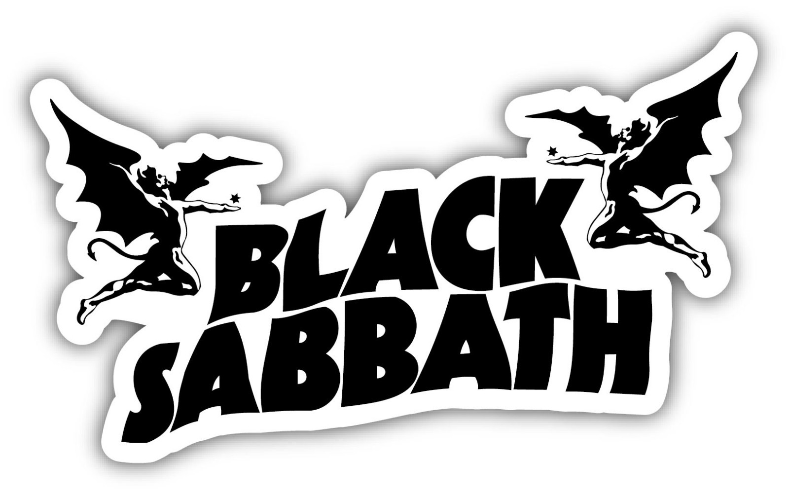
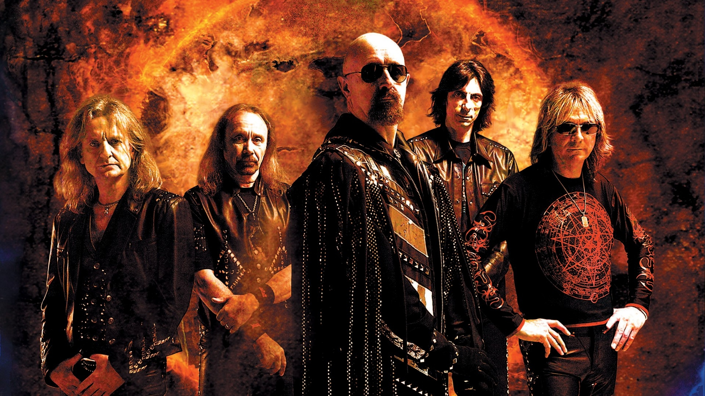

Nous allons commencer par expliquer d'où vient ce style de musique, le Metal
Tout d'abord, le Metal est un genre musical dérivé du rock apparu au Royaume-Uni et aux États-Unis à la fin des années 60
À cette époque, plusieurs groupes de rock expérimentent des sons plus lourds, mais c’est véritablement Black Sabbath qui va poser les fondations du Metal. Leur musique, sombre, lente et oppressante, tranche radicalement avec le rock classique. Les riffs massifs de Tony Iommi, associés à l’atmosphère inquiétante de leurs textes, créent quelque chose d’entièrement nouveau.
Black Sabbath est donc considéré comme le groupe fondateur du Metal. Leur premier album, sorti en 1970, marque un tournant : c’est la naissance officielle du Heavy Metal. Leur influence se retrouve dans presque tous les sous-genres du Metal, des plus mélodiques aux plus extrêmes.
Au même moment, d'autres groupes importants comme Deep Purple et Led Zeppelin participent à durcir le son du rock. Même s’ils ne sont pas toujours considérés comme du 'Metal pur', ils ont largement contribué à l’esthétique du genre : puissance sonore, solos techniques et thèmes plus sombres.
À partir du milieu des années 70, le Metal évolue avec l’arrivée du Heavy Metal tel qu’on le connaît. Des groupes comme Judas Priest retirent presque totalement l’influence blues du rock pour créer un son plus rapide, plus agressif et plus métallique. C’est aussi l’époque où l’imagerie Metal commence à se définir : cuir, clous, motos, attitudes rebelles.
À la fin des années 70, ce style inspire une nouvelle vague : la New Wave of British Heavy Metal (NWOBHM). Ce mouvement, avec des groupes comme Iron Maiden ou Saxon, accélère encore les tempos, introduit des mélodies plus épiques et pose les bases du Metal moderne. C’est une période essentielle qui préparera l’arrivée du Thrash, du Power Metal, du Death et d’autres sous-genres.
Le Metal a souvent été un style profondément engagé, qui aborde des thèmes sociaux, politiques et humains. Même si tous les groupes ne prennent pas position de la même manière, une grande partie de la scène défend des idées liées à la liberté, à la lutte contre les injustices, à la critique du pouvoir ou encore à la dénonciation des inégalités sociales. Ces prises de parole, parfois associées à une vision rebelle et anti-autoritaire, donnent au Metal une dimension politique forte.
Le Metal parle aussi de sujets sombres et personnels : douleur, solitude, colère, santé mentale, traumatisme, perte, questionnement existentiel… Comme beaucoup de styles alternatifs, il s’éloigne des thèmes plus 'mainstream' pour aller explorer ce que la société préfère souvent éviter. Le Metal n’est donc pas simplement une musique agressive : c’est un moyen d’exprimer ce que les autres styles n’osent pas toujours dire, sans filtre et sans détour.
|
|
Vous trouverez dans cette vidéo (qui commence à vieilire un peu) une description du metal ainsi qu'une explication de ces origines bien plus approfondie que le texte précédent. |
|---|
|  |
Voici le groupe considéré comme l’un des “fondateurs” du genre. Comme dit précédemment, il s’agit de Heavy Metal. Nous vous laissons écouter l’une de leurs musiques les plus iconiques : “Paranoid”. |
|---|---|
|
Voici un groupe qui a largement contribué à durcir le son du rock et à façonner l’esthétique du Metal. Même s’ils ne sont pas toujours considérés comme du 'Metal pur', Deep Purple a influencé le genre avec sa puissance sonore, ses solos techniques et ses thèmes plus sombres. Nous vous laissons écouter l’un de leurs morceaux les plus emblématiques : “Smoke on the Water”. |

|
|  |
À partir du milieu des années 70, Judas Priest transforme le Heavy Metal en retirant presque totalement l’influence blues du rock. Leur son devient plus rapide, plus agressif et véritablement métallique. L’imagerie Metal, cuir, clous et attitudes rebelles, commence également à se dessiner avec eux. Écoutez l’un de leurs classiques pour ressentir cette puissance : “Breaking the Law”. |
|
Iron Maiden fait partie de la New Wave of British Heavy Metal (NWOBHM) qui accélère les tempos et introduit des mélodies plus épiques. Ce mouvement pose les bases du Metal moderne et a inspiré de nombreux sous-genres. Pour découvrir leur style légendaire, écoutez : “The Number of the Beast”. |

|
Pour passer à la suite, répondez correctement.
Quel groupe est considéré comme le père fondateur du Metal ?